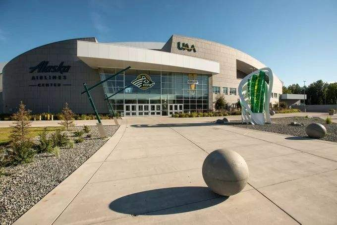

Important news and events
Chinanews.com, December 1 (1) Us President-elect Joe Biden received his first presidential Daily Briefing (PDB) on November 30, marking a new phase in his ascent to the White House.
On the same day, Mr Biden announced that he would nominate Janet Yellen to be Treasury secretary. If confirmed by the Senate, Yellen would become the first female Treasury secretary in US history.
Image: Page-1
Student activities
Biden received the briefing in Wilmington, Delaware, the report said. Vice President-elect Harris was briefed in the Commerce Department security room, where Biden's transition office is located.
| U. S. Bureau of Labor Statistics sample data | ||
|---|---|---|
| Job | Median Pay | Job Growth through 2024 |
| Computer and Information Research Scientist | $108,360 per year | 11% (2700 more jobs) |
| Computer Network Architects | $98,430 per year | 9% (12,700 more jobs) |
| Computer Analyst | $82,710 per year | 21% (118,600 more jobs) |
Table 1: Caption
The World Wide Web reports
【The World Wide Web reports】在A day after reacting strongly to the cartoons and demanding an "apology" from China, Australian Prime Minister Morrison today (December 1) abruptly put out a fire and said the issue should not be amplified.
Morrison said in a video conference that Australia's goal is to safeguard national interests and values, while trying to maintain a working relationship with China, according to the website of Australia's New Daily.
"Our focus is to establish a dialogue that will enable us to resolve the inter-governmental issues in a stable manner." "That doesn't need to be amplified any further," Morrison said at the time.
Morrison also acknowledged the seriousness of Australia's relationship with China, according to the Australian's Chinese website.
A day earlier, Australian Prime Minister Morrison had demanded an apology for a Tweet by Chinese Foreign Ministry spokesman Zhao Lijian about a cartoon showing Australian troops killing Afghan children, saying it was a "fake" and that China should "feel ashamed”.
In response, Chinese Foreign Ministry spokesperson Hua Chunying said on November 30 that Australian soldiers committed serious crimes in Afghanistan, which was reported by Australian media and confirmed by the investigation report of Australian Defense Department. Australian defence force commander Campbell held a special conference, introduced the content of the report, report the details of the shock and horror, including adult men and boys together, or blindfolded cut throat, and after two 14-year-old boy cutthroat pocket, into the river, but also require the recruits shooting prisoners of war, such as the "eyes". These atrocious crimes by The Australian side have been strongly condemned and condemned by the international community.
30, Morrison anger of the creator of the cartoon image, social account called "wu and kirin" China youth hand painting said in an interview with the global times reporter, he told the Australian prime minister actually have such an intense anger on drawing "was surprised," he thought, Morrison's anger should not aim at Zhao Lijian or illustration of their own, the focus should be on the Australian troops in Afghanistan. Earlier, he was asked about zhao lijian's tweet about his painting, which was "hung up" by the Australian prime minister. "Then I'll have time to draw another one tonight," he said.
